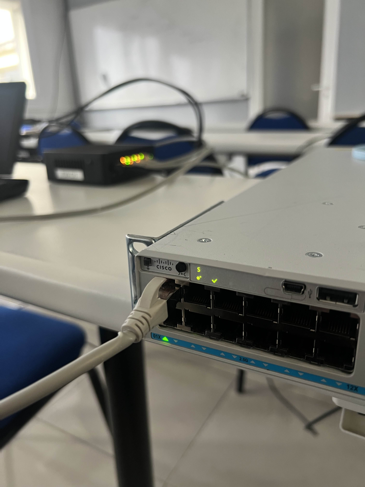

01. Objectif du Projet
Déploiement d'une infrastructure virtualisée complète sous Proxmox VE intégrant OPNsense, Samba, FTP, GLPI et Windows Server 2022.
Astuce : Préparer l'architecture réseau avant la création des machines virtuelles.

02. Switch Cisco 2960
Remise en service du switch bloqué en mode ROMMON et démarrage manuel de l'image IOS depuis la mémoire flash.
Astuce : Vérifier la présence de l'IOS avec flash_init puis dir flash:.

03. Bridges Réseau Proxmox
Création des bridges vmbr0 (WAN) et vmbr1 (LAN) afin de relier les VMs au réseau physique.
Astuce : Séparer les réseaux WAN et LAN facilite la sécurité et le dépannage.

04. Déploiement OPNsense
Création de la VM OPNsense avec deux interfaces réseau connectées aux bridges vmbr0 et vmbr1.
Astuce : Prévoir les interfaces WAN et LAN dès la création de la machine virtuelle.

05. Configuration WAN / LAN
Assignation des interfaces em0 (WAN) et em1 (LAN), puis définition de la passerelle LAN à 192.168.1.254.
Astuce : Vérifier la connectivité réseau avant d'installer les services.

06. Serveur Samba
Déploiement d'une VM Debian 12 avec partage Samba sécurisé et gestion des accès par groupe d'utilisateurs.
Astuce : Utiliser des groupes facilite l'administration des permissions.

07. Serveur FTP
Installation de vsftpd sur Debian et configuration d'un accès FTP sécurisé avec utilisateur dédié.
Astuce : Contrôler les permissions des répertoires avant les tests.

08. Installation GLPI
Mise en place de GLPI 11.0.4 sur une stack LAMP composée d'Apache, MariaDB et PHP 8.2.
Astuce : Respecter l'organisation recommandée des fichiers GLPI.

09. Validation des Services
Tests de connectivité Samba, FTP et GLPI depuis les machines clientes du réseau virtualisé.
Astuce : Tester chaque service individuellement avant les validations finales.